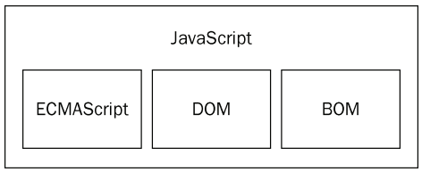
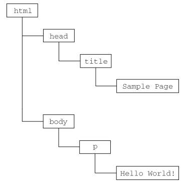
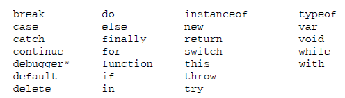
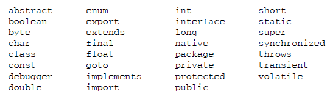
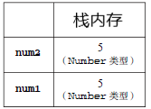
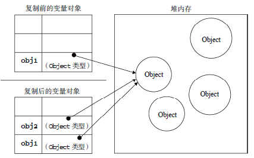
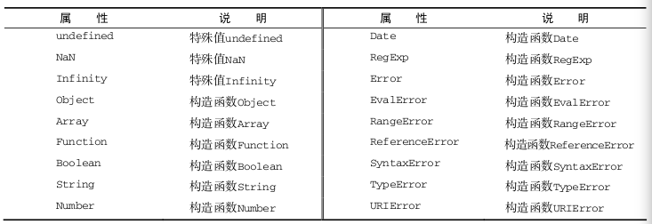

JavaScript入门笔记
Written by SJTU-XHW
Reference: 《Professional JavaScript for Web Developers》 3rd Edition
本人学识有限，笔记难免有错，恳请读者能够批评指正，本人将不胜感激！
Chapter 0. JavaScript 起源
0.1 历史
Web 流行早期（上世纪末），Internet 用户上网速度 28.8 KB/s，但网页的大小和复杂性却不断增加。为完成简单的表单验证而频繁地与服务器交换数据只会加重用户的负担。于是，为了开发一种客户端语言，仅用来处理表单的简单验证工作，Netscape 公司在其发布的应用 Netscape Navigator 2 上加入一种脚本语言
LiveScript，认为是 JavaScript 的前身之一；1995 年 2 月，Netscape 与 Sun 合作，为了搭上媒体热炒 Java 的顺风车，临时把
LiveScript改名为JavaScript，这就是 JavaScript 1.0；其后不久，微软在自家作品 IE 3 中加入
JScript（是 JavaScript 的另一种实现） ，标志着 JavaScript 作为一门语言，其开发向前迈进了一大步。同时也有个严重问题：此时世界上有了两个不同的 JavaScript 版本：Netscape Navigator 中的
JavaScript、Internet Explorer 中的JScript。与 C 及其他编程语言不同，当时还没有标准规定 JavaScript 的语法和特性。1997 年，欧洲计算机制造商协会（ECMA）制定了新脚本语言标准，称为
ECMA-262，即ECMAScript。此后，各个浏览器开发厂商以此标准作为各自 JavaScript 实现的基础，衍生出一系列的版本和生态。注：此后因为各种复杂的历史原因，JavaScript 和 JScript 相当久之后才渐渐兼容 ECMAScript；
此后 Mozilla 公司继承了 Netscape 的项目，继续开发 JavaScript 和 Netscape/Mozilla 浏览器；而如今，含 IE 内核的浏览器仍使用的是 JScript，不过现在它们都 ECMAScript 兼容了。
0.2 JavaScript 实现
虽然 JavaScript 和 ECMAScript 通常都被人们用来表达相同的含义，但 JavaScript 的含义却比 ECMA-262 中规定的要多得多（JavaScript 的 3 个主要组成部分）：

0.2.1 ECMAScript：JavaScript 的标准和核心
- 与浏览器没有依赖关系，不包含输入输出定义；
- 规定内容包括：语法、类型、语句、关键字、保留字、操作符、对象；
- 提供此语言解释器的环境称为 宿主环境；
- ECMAScript 兼容：指满足以下几点的宿主环境：
- 支持 ECMA-262 描述的所有“类型、值、对象、属性、函数以及程序句法和语义”；
- 支持 Unicode 字符标准；
- 添加 ECMA-262 没有描述的“更多类型、值、对象、属性和函数”；
- 支持 ECMA-262 没有定义的“程序和正则表达式语法”（也就是说，可以修改和扩展内置的正则表达式语法）；
0.2.2 DOM：文档对象模型
DOM 是一种针对 XML 但经过扩展用于 HTML 的 API（应用程序编程接口），并不只是针对 JavaScript，很多其他语言也实现了；
知识补充：XML 格式
一种和 HTML 类似的多层节点文档结构，结构中每个组分都是某种类型的节点，这些节点又包含不同类型数据。
ECMAScript 的扩展实现之一，依赖于 HTML / XML 页面；
功能：核心规定的是如何映射基于 XML 的文档结构，以便简化对文档中任意部分的访问和操作；
DOM 的这个功能比较抽象，具体来说就是将：
1
2
3
4
5
6
7
8<html>
<head>
<title>Sample Page</title>
</head>
<body>
<p>Hello World!</p>
</body>
</html>在编程层面抽象为：

提供了一些方便的接口函数，让开发人员可以轻松自如地删除、添加、替换或修改任何节点。
DOM 级别：DOM API 的标准历史版本；
DOM 1 级：由 DOM Core 和 DOM HTML 两个模块 API 构成。前者规定如何映射基于 XML 的文档结构（操作函数声明），后者添加了针对 HTML 的对象和方法；
DOM 2 级：在 DOM 1 级基础上扩充了鼠标 及 GUI Events、Ranges、Iteration（迭代 DOM 文档的方法）等模块，增加对 CSS 的操作接口支持；
- DOM Views，DOM 视图接口；
- DOM Events，事件处理接口；
- DOM Style，基于 CSS 为指定元素应用样式的接口；
- DOM Traversal and Range：遍历和操作文档树的接口；
DOM 3 级：在 DOM 2 基础上，引入了以统一方式加载和保存文档的方法（DOM Save & Load）、新增了验证文档的方法（DOM Validator）、扩展了 DOM Core（支持 XML 1.0 规范，涉及 XML Infoset、XPath 和 XML Base）；
其他 DOM 标准 API：
- SVG（可伸缩矢量图）；
- MathML（数学标记语言）；
- SMIL（同步多媒体集成语言）；
0.2.3 BOM：浏览器对象模型
定义：一组支持访问和操作浏览器窗口的 API；
ECMAScript 的扩展实现之一，依赖于浏览器；
早期漏洞出现频繁，兼容性不强，因为没有相关标准。
HTML 5 出现后，BOM 的框架才列入正式规范；但目前各个浏览器实现方式几乎都不同；
功能：
- 弹出新浏览器窗口的功能；
- 移动、缩放和关闭浏览器窗口的功能；
- 提供浏览器详细信息的 navigator 对象；
- 提供浏览器所加载页面的详细信息的 location 对象；
- 提供用户显示器分辨率详细信息的 screen 对象；
- 对 cookies 的支持；
- 像 XMLHttpRequest 和 IE 的 ActiveXObject 这样的自定义对象；
0.3 总结
JavaScript 是一种专为与网页交互而设计的脚本语言，由下列三个不同的部分组成：
- ECMAScript，由 ECMA-262 定义，提供核心语言功能；
- 文档对象模型（DOM），提供访问和操作 XML 文档 和 HTML 页面内容的方法和接口；
- 浏览器对象模型（BOM），提供与浏览器交互的方法和接口。
JavaScript 的这三个组成部分，在当前五个主要浏览器（IE、Firefox、Chrome、Safari 和 Opera）中 都得到了不同程度的支持。
其中，所有浏览器对 ECMAScript 第 3 版的支持大体上都还不错，而对 ECMAScript 5 的支持程度越来越高，但对 DOM 的支持则彼此相差比较多。对已经正式纳入 HTML5 标准的 BOM 来说，尽管各浏览器都实现了某些众所周知的共同特性，但其他特性还是会因浏览器而异。
接下来开始加速，请做好准备。
Chapter 1. 在 HTML 中使用 JavaScript
1.1 <script> 元素
使用 <script> 元素将 javascript 加入 HTML：最早由 Netscape 实现，后来作为 HTML 4.01 的规范；
<script> 元素的属性：
async：可选，表示立即下载这个脚本，但是异步（不妨碍其他内容加载和运行），仅对外部脚本有效，内嵌无效；defer：可选，表示当前脚本可以延迟到文档完全解析、显示后再执行，仅对外部脚本有效；src：可选，表示这个脚本是外部脚本，并指定位置；
还有两种可以不掌握：
type：可选，脚本语言类型，一般没啥用，默认值就是text/javascript；charset：可选，指定字符集（由于大多数浏览器会忽略这个属性，所以很少有人用）；
<script>元素的位置：过去经典做法是将所有脚本标签放在 HTML 的
<head>元素中，这意味着需要等所有脚本加载完毕才会开始解析页面，这对 JS 代码很多的页面而言，延迟明显；现代的 Web 应用将 JS 放在
<body>元素最后的部分，在用户看来提升了页面加载速度；
1.2 内联脚本 和 外部脚本
内联的方法很简单，只有一种可能的写法：
1 | <script type="text/javascript"> |
内联 js 脚本需要注意几点：
内联 js 脚本会在 HTML 中顺序解释（同步），即不执行完不向下解释 HTML；
不允许在内联脚本中以任何形式出现
</script>，除非有转义符，例如：1
2
3
4
5<script type="text/javascript">
function sayScript() {
alert("<\/script>");
}
</script>
外部 js 脚本必须有 src 属性，defer 和 async 可选；
注意，外部 js 脚本也会在 HTML 中顺序解释，但 defer 和 async 可能改变这个行为；
在 HTML 中嵌入 JavaScript 代码虽然没有问题，但一般认为最好的做法还是尽可能使用外部文件来包含 JavaScript 代码。不过，并不存在必须使用外部文件的硬性规定，但支持使用外部文件的人多会强调如下优点：
- 可维护性：遍及不同 HTML 页面的 JavaScript 会造成维护问题。但把所有 JavaScript 文件都放在 一个文件夹中，维护起来就轻松多了。而且开发人员因此也能够在不触及 HTML 标记的情况下， 集中精力编辑 JavaScript 代码；
- 可缓存性：浏览器能够根据具体的设置缓存链接的所有外部 JavaScript 文件。也就是说，如果有两个页面都使用同一个文件，那么这个文件只需下载一次。因此，最终结果就是能够加快页面加载的速度；
- 适应性：通过外部文件来包含 JavaScript 无须使用 XHTML 或注释 hack。HTML 和 XHTML 包含外部文件的语法是相同的；
1.3 <noscript> 元素
在不支持 Javascript 的浏览器 / 浏览器禁用 Javascript 的情况下，才会显示 <noscript> 中的元素。
Chapter 2. Javascipt 基本语法
本章的语法标准以 ECMA-262 实现的 ECMAScript 为基础。
2.1 细节
区分大小写；
变量标识符命名规范：与 C / C++ 等一般语言不同的是，ECMAScript 允许美元符号（
$）存在于变量名的任何位置，包括开头。其他都与普通语言相同，例如不用关键字、不用数字开头、建议驼峰命名等；都是合法的变量标识符；
注释：同 C / C++；
严格模式：在脚本全文开头（作用于全文） / 某函数体中（作用于该函数）使用
"use strict";，代表编译指示（pragma），启用 Javascript 的严格模式；本质上为 Javascript 定义了一种不同的解释和执行模型，对 ECMAScript 3 中的 UB 也能得到处理，但是对某些不安全的行为会抛出错误，执行结果也可能与普通模式不同。这个区别会在以后的讨论时及时指出。
语句建议使用分号结尾（虽然没有分号解释器一般也可以识别，但还是规范点好），语句块的模式和 C / C++ 都一样，以花括号表示语句块；
2.2 关键字和保留字


此外，ECMAScript 5 中新增 let 和 yield 为保留字；
在严格模式下，不允许使用 eval 和 arguments 作为标识符或属性名；
2.3 变量
ECMAScript 定义的变量是松散类型，即变量只是一个占位符，本身可以用来保存任何类型。
变量声明：使用
var关键字；1
var message;
像这样未初始化的值会保存一个特殊的值：
undefined（之后讨论这是什么）；变量定义（声明 + 初始化）；
1
2
3
4
5var message = "Hello";
// 允许多个定义，与 C / C++ 类似
var msg = "world",
age = 100,
cdn = false;
变量的定义或声明不建议忽略 var，因为在严格模式下会抛出错误；
2.5 数据类型
ECMAScript 中的基本数据类型有 5 种：Undefined、Null、Boolean、Number、String；另外有一种复杂数据类型：Object，本质上由一组无序键值对构成，相当于小型的 “类” 的概念；
因为 ECMAScript 的类型动态性，就没有必要定义其他数据类型了。
2.5.1 typeof 保留字：数据类型检查
使用 typeof <anything> （也允许用括号括起来）可以返回这几种字符串："undefined"、"boolean"、"string"、"number"、"object"、"function"；
- 注 1：
Null类型实际上是一个空的Object引用，因此typeof null返回"object"； - 注 2：函数实际上也是一类
Object，但有一些特殊的属性，因此 ECMAScript 有必要在typeof输出中单独区分开；
2.5.2 Undefined 类型
此类型只有一个值：undefined，常常在访问未初始化变量时出现。可以用等号操作符（==）判断：
1 | var message; |
也可自行给定 undefined 值（不过没必要）：
1 | var message = undefined; |
需要注意的是，未定义 / 声明的变量 和 声明了却 undefined 的变量 不一样。前者直接使用是错误的，这和大多数语言一样。
但是，对未声明的变量可以用 typeof，并且返回的也是 "undefined"，尽管它们不能使用；因此尽量初始化是个好习惯，这样我们就能知道哪些值是没声明的，而不是没初始化。
2.5.3 Null 类型
此类型也只有一个值：null，表示空的对象的引用；
建议总是为 将来要存储 object 的变量赋予该值，一方面体现了 null 的意义，另一方面有助于区分 null 和 undefined。
很奇怪的是，我们没法用相等运算符区分 null 和 undefined：
1 | alert(null == undefined); // true |
但是，这不妨碍我们在操作一个变量前检查它：
1 | if (obj != null) { // 同时拦截 null 和 undefined |
2.5.4 Boolean 类型
此类型只有两个值：true（真值）、false（假值）；
其他任何类型都可以通过类型转换函数（Boolean()）或者条件语句自动类型转换转为 Boolean 值：
- 会转换为 假值 的值：String 类型空字符串、Number 类型 0 和
NaN、Object 类型null、Undefined 类型undefined； - 其余所有值都会转为 真值（包括后面提到的
Infinity等等）；
1 | var message; |
2.5.5 Number 类型
数值运算 和 数值范围
声明相当于 C/C++ 中的整型 + 浮点数；使用方法（如 8 进制、10 进制、16 进制表示方法、浮点数科学计数法等）、注意事项（不用浮点数作比较等等）与 C/C++ 也相同；
数值范围：Number.MIN_VALUE(5e-324) ~ Number.MAX_VALUE(1.8e+308)，超出范围的值会被转为特殊的正数 Infinity 或负数 -Infinity（均无法继续运算）；
一般计算很难出现正负无穷的情况，真正进行大数计算时，可以用 isFinite() 检查；
NaN
此外，还有一个 NaN（Not a Number），是个特殊数值，用来表示一个本该返回数值的操作数未返回的情况（这样省去抛出错误的情况）；
NaN 也不能使用相等运算符比较：
1 | alert(NaN == NaN); // false |
ECMAScript 提供了专门的判断函数 isNaN()，工作原理是对传入参数转为 Number 类型运算，如果不能运算，那么返回 true，例如：
1 | alert(isNaN(10)); // false |
不可思议的是，isNaN() 可以作用于对象 Object，先调用 valueOf() 方法确定返回值是否能转换，然后调用 toString() 再看结果是否能转换；
数值转换
Number()：将任何数据类型转为数值；parseInt(String)/parseFloat(String)：将字符串转为相应数值；
无法转换的返回 NaN，这就解释了 isNaN() 的工作原理；
但是 null 可以转换为 0；
2.5.6 String 类型
字符串直接量
可以使用单引号或双引号完成，和 PHP 不同，这两种引号没区别；
常用属性 / 方法
对一个 String 类型，它具有以下几种常用属性：
length；
和以下的常用方法：
加法拼接运算；
注意，对于运算过程有个处理机制，例如下面这段代码：
1
2var lang = "Java";
lang = lang + "Script";首先创建一个能容纳 10 个字符的新字符串，
然后在这个字符串中填充”Java”和”Script”，
最后一步是销毁原来的字符串”Java”和字符串”Script”（二者其后的引用数为 0）；
at、indexOf、substr、endsWith…… 等其他一切和 Java String 很接近的函数；
类型转换函数
除了 Null 和 Undefined 类（它们直接返回），其他所有类型都有 toString()；
此外，可以通过 + 运算符隐式转换：
1 | var ageStr = "" + 18; |
2.5.7 Object 类型
创建方法
和 Java 语言一样，使用 new 关键字申请创建新对象，但是回收无需开发者操心：
1 | var o = new Object(); |
同样和 java.lang.Object 一样的是，Object 也是所有 object 的父类，它也有如下的抽象方法：
constructor：构造函数，前面的
Object()就是Object类的构造函数；hasOwnProperty(propertyName: String)：检验当前对象中是否存在自定义的属性名；类似 Python
hasattr；isPrototypeOf(object: Object)：检验当前 object 对象是否是传入的object的原型（Prototype）；propertyIsEnumerable(propertyName: String)：检验当前 object 对象的属性是否能使用for-in循环进行迭代遍历；toLocaleString/toString()：转字符串；valueOf()：默认返回自身；
值得注意的是， ECMAScript 中没有定义如 BOM、DOM 中的对象，因为它们是 宿主对象，所以某些宿主对象可能不继承于 Object；
属性键值对添加方法
直接使用作用域运算符（.）：
1 | var obj = new Object(); |
属性键值对删除方法
使用关键字 delete：对于几乎所有对象、简单类型都能这么做，解释器立即删除为该变量分配的空间，相当于回到未声明前；
1 | var obj = new Object(); |
2.6 操作符
自增、自减、一元加减、位运算、普通四则运算、取模、复合赋值运算符、三目运算符几乎全部与 C/C++ 相同；
有几个点需要注意：
逻辑操作和 C/C++ 不一样，返回的值不一定是 Boolean：只要有一个 operand 不是 Boolean 类型，那么返回的就是真值的数据类型；
1
var test = 0 || 123; // test == 123
Infinity与普通数的四则运算关系、+0和-0的运算关系，与 C++ 浮点数相同；数据加法运算 和 字符串拼接运算 在某些情况需要开发者手动明确语义，防止发生意想不到的情况：
1
2var test = 5 + "5"; // 字符串拼接，test == "55"
var test2 = 5 + parseInt("5", 8); // Number 运算，test == 10比较运算符在应用在两个 operand 都是 String 的方面，会将 String 的每一位字符拿出 ASCII / Unicode 进行比较；如果有一个是 Number 类型，解释器都会尝试将另一个转为 Number，转换不成就变成 NaN，而 NaN 参与比较运算永远是 false：
1
2
3
4
5var res = "23" < 3; // false, 23 > 3
var test = "23" < "3"; // true, u'2' < u'3
var res1 = NaN < 3; // false
var res2 = NaN >= 3; // false⚠ 在比较运算时，如果一个是 number 另一个是 string，则统一换为 number；而在加法运算时，如果一个是 number 另一个是 string，则统一换为 string（都不论前后顺序）；
逗号操作符：和 C / C++ 一样，用于声明多个变量。但是 ECMAScript 还能用于赋值，但只返回表达式最后一项：
1
2var num1 = 1, num2 = 2, num3 = 3;
var num = (5, 1, 4, 8, 0); // num == 0
ECMAScript 中还引入了几种不同的运算符：
- 在比较运算符中，除了相等运算符（
==），还有全等运算符（===）；这是因为相等运算符比较会发生自动类型转换，例如"5" == 5是 true，而全等运算符不会转换数据类型。所以必要时，建议使用全等运算符； - ECMAScript 中存在无符号右移
>>>和无符号右移赋值>>>=；
2.7 语句
if-else 语句、while 语句、do-while 语句、for 语句、标签语句、break/continue 语句、switch 语句使用与 C/C++ 相同，但是！
ECMAScript 中不存在块级作用域，这意味着代码块中定义的，在外面也能访问：
1 | for (var i = 0; i < 100; ++i) { |
ECMAScript 还具有：
for-in语句：精准的迭代语句，可以用于枚举 object 的属性（回忆一下，没有顺序），for (property in expression) statement;1
2
3for (var prop in window) { // BOM window 对象
document.write(prop);
}注意，使用前需要检查
object不能为null/undefined，否则在某些浏览器上会报错；with语句（大型项目不建议使用，因为性能极差，并且可读性差，并且在严格模式下不允许使用，会视为错误）：简化多次编写同一个对象的工作；1
2
3with (location) {
qs = search.substring(1);
}上面的
qs会先当作普通局部变量查找，再当作location的属性查找；如果找不到再报错；
2.8 函数
定义语法如下：
1 | function functionName(arg0, arg1, ..., argN) { |
ECMAScript 中有几个值得注意的点：
和强类型语言不一样，ECMAScript 不关心函数返回值类型、参数类型；
和其他众多语言不一样，ECMAScript 甚至不关心形参列表究竟是什么，意味着你即便这么定义函数：
1
2
3function foo() {
// do something
}你也可以这样调用：
1
2
3
4foo();
foo(1);
foo("Hello", 1, 2);
foo(1, "world", 2, 3, 4, 5, 6);因为在函数内部维护了
arguments保留字，它相当于数组（但不是Array的实例，类型是Object），可以用方括号访问 entry，也可以访问.length来看究竟传入了多少参数，并且生存周期仅在函数中，超过周期即销毁为undefined；所以形参表存在的唯一作用是方便函数调用传入参数。这样，尽管 ECMAScript 没有重载的概念、没有函数签名的概念，但事实上也不需要了（ECMAScript 尝试定义重名函数，只会保留最后一次出现的定义）。
值得注意的是，通常在函数内修改
arguments是不规范的行为，在严格模式下会抛出错误；
Chapter 3. 内存问题 与 变量作用域
3.1 变量类型 与 内存
在 ECMAScript 中，有 2 种变量类型：
基本类型（前面提到的 5 种基本数据类型）和 引用类型；
而当解释器执行某个赋值语句时，必须确定当前变量是基本类型还是引用类型。这是为什么？
主要是因为 JavaScript 中，这两种类型的变量在内存中的形态不同。
- 对于基本类型的变量（ECMAScript 中包含字符串），其值存放于解释器运行时环境中（可以理解为放在栈内存上）；
- 对于引用类型的变量，创建总需要
new关键字在堆内存中开辟空间。由于 JavaScript 不允许使用地址 / 指针，因此引用类型变量在复制 / 赋值等操作时总是针对引用（相当于 C 中自动完成*objPtr）、在设置属性操作时总是针对对象（相当于 C 中自动完成objPtr->attr）；
看两个例子就能彻底明白：
1 | var num1 = 5; |

1 | var obj1 = new Object(); |

那么检查一个变量名存放的究竟是基本数据类型还是引用类型，可以使用 typeof 关键字；
对于返回值为 object / function 的变量而言，它们一定是引用类型变量，其他则是基本类型；
此外，对于 JavaScript 中的继承关系，有关键字 instanceof 识别：
1 | console.log(Array instanceof Object); /* 内置 Array 类是 Object 的子类 */ |
Tips. 此内容第一次读可以跳过。
对于正则表达式，不同的 JavaScript 解释器执行
typeof的结果不同，这是实现标准不同的原因。对于 ECMA-262 标准规定，任何在内部实现[[Call]]方法的对象都应该在应用typeof操作符时返回"function"，Safari（> 5）及 Chrome（> 7）满足这条规定，但 IE 和 Firefox 则会返回"object"；
3.2 动态属性 与 内存
了解了基本类型 和 引用类型变量在内存中的排布，那么还有一个问题。既然像 Object 一类的引用类型是在堆内存中的，那么为他们设置属性的时候，它们的属性应该放在哪里？
其实也是放在堆中的。毕竟它们的属性也是动态的，运行时随时可以添加和删除。
所以我们看看以下的示例：
1 | var obj = new Object(); |
等价于 C 的：
1 |
|
等价于 C++ 的：
1 |
|
还有一个问题，基本类型变量能否设置属性呢？直觉上肯定是会报错的。实际上，不会报错，但解释器只是忽略了此语句。例如：
1 | var name = "Tom"; |
所以我们只能对引用类型变量设置动态属性。
3.3 函数参数传递 与 内存
在学习 JavaScript 函数时，我们曾经了解到 arguments 内置变量。而参数传递的过程，就是：
- 向
arguments中赋予0 ~ N键对应的值； - 向自定义的形式参数赋予对应的值（如果有的话）；
这些赋值后的变量都是函数局部变量，如果实际参数是一个基本类型的变量，那么直接值传递；如果实际参数是一个引用类型的变量，那么进行引用传递（类似 C++ 中参数自动完成 Type ¶m）；
3.4 执行环境 与 变量作用域
JavaScript 中一个相当重要的概念就是 执行环境（execution context），和 C 中的作用域的思想相近，但不相同。JavaScript 执行环境有以下特征：
执行环境定义了变量或函数有权访问的其他数据，决定了它们各自的行为；
每个执行环境都有一个与之关联的变量对象（variable object），环境中定义的所有变量和函数都保存在这个对象中；
类似 Python 的对于一个包的
__dict__属性；与 Python 不同的是，开发者没法访问这个变量对象，只有解释器才能使用它；
JavaScript 最外围的执行环境被称为全局执行环境（可以有多个）。不过，根据 ECMAScript 实现所在的宿主环境不同，表示执行环境的对象也不一样；
什么是 “表示执行环境的对象”？
JavaScript 中将保持上下文变量、函数的任务统统交给了对象（
Object）。因此将当前执行环境的变量、函数保存的对象就称为 “表示执行环境的对象”；例如，如果宿主环境是 web 浏览器（即浏览器提供解释器），那么全局执行环境就是
window对象（将在后面介绍）；因此所有的全局变量、函数都作为window对象的属性和方法创建；JavaScript 中每个函数都有自己的执行环境。这就类似 C 中的栈帧，区分局部变量（存放于当前执行环境中的变量）、全局变量（存放于全局执行环境中的变量）；
JavaScript 在此基础上定义了 作用域链（scope chain）的概念，定义为用于保证对执行环境有权访问的所有变量和函数的有序访问。可以将它理解为 JavaScript 解释器搜索标识符的字典；
每当程序进入一个新执行环境中，解释器会创建一个新的变量对象（前面的规则），而这个对象就位于作用域链的最前端。因此作用域链的前端，始终都是当前执行的代码所在环境的变量对象。以函数环境为例，
arguments对象就是最开始的变量对象。作用域链越向后，变量对象越靠环境外层。因此全局执行环境的变量对象始终都是作用域链中的最后一个对象。
这样的链形结构，以及排布顺序，决定了局部变量、全局变量的优先级（和 C 一样）。
除了函数，
with语句、try-catch语句均拥有一个独立的执行环境（或者说一个独立的变量对象），这点和 C 的作用域也相同；- ⚠ 和其他语言有差别的是，JavaScript 没有块级作用域。也就是说，除了函数、
with、try-catch块以外的、由花括号封闭的代码块，没有独立的执行环境（或者说独立的变量对象），这点和 C 的作用域不同！
3.5 垃圾回收机制（GC）
和 Python、Java 一样，JavaScript 具有自动垃圾回收机制，无需像 C / C++ 一样手动回收分配的空间。
几乎所有自动 GC 都遵循一个理念：按照某个策略预定的时间（定时策略），释放不再继续使用的（标记策略）引用类型变量所占用的空间；
所以，这个 GC 机制中有两个需要决定的策略，我们介绍一下常见的策略类型（以下回收的变量都指的是引用类型，不再赘述）。
3.5.1 标记策略
JavaScript 中有两种常用的标记策略，分别是：标记清除（mark-and-sweep）、引用计数（reference counting）；
所谓标记清除就是：
- 当变量在该环境内的时候，标记的是 进入环境；
- 当变量离开定义它的环境后，标记的是 离开环境；
- 当定时策略指定的检查时间到的时候，仅释放所有离开环境的变量的空间；
所谓引用计数就是：
- 跟踪记录每个变量被引用的次数。当该引用被赋予一个变量名后，该空间的数据引用计数 + 1；反之，如果该变量名改赋其他值，或被显式 delete 时，引用计数 - 1；
- 当定时策略指定的检查时间到的时候，仅释放所有引用计数为 0 的变量的空间；
但是，引用计数策略有个严重问题：循环引用。
考虑以下代码：
1 | function testCirRef() { |
如果采用引用技术方法作为标记策略，那么退出函数体后，obj1 、obj2 的引用计数永不为 0；而且最有趣的问题是，JavaScript 的 DOM、BOM 的对象是使用 C++ 的 COM（Component Object Model，组件对象模型）实现的，它的回收是内置采用引用计数策略的。这就意味着使用 DOM / BOM 对象时，不可避免地可能产生循环引用。例如下面使用 DOM 的代码（后面介绍）：
1 | var element = document.getElementById("some_element"); |
所以书写时要注意循环引用的情况并且在不需要使用的时候及时解开 DOM 对象 和 JavaScript 原生 Object 之间的连接（想象成要像 C 一样手动释放）：
1 | myObject.element = null; |
注：发生循环引用不仅仅有以上的可能，更多可能以后遇到再讨论。
综上原因所述，标记清除 是 JavaScript 中最常用的 GC 标记策略（主流浏览器引擎也都是）；
而引用计数则存在于 COM 实现的对象中（例如 BOM、DOM 对象），在使用时注意检查循环引用的情况，并且及时手动解引用。
3.5.2 定时策略
定时策略非常好想，大家肯定都会想到：周期性回收就行；但如何确定回收周期非常讲究。
IE6 浏览器实现的 JavaScript 解释器曾经有个非常严重的性能问题，这就是定时策略没有设计好。他们是这么为 IE6 JavaScript 设计的：
256 个变量、4096 和对象（包括元素），或者 64 KB 的字符串，达到上述任意一个临界值，GC 会被自动触发。
这么设计有什么问题呢？考虑一个问题，假设一个大型 JavaScript 程序的运行时必须使用多于 256 个变量（或者其他超过临界值的条件），那么垃圾回收例程会被一直持续触发，严重影响性能。
后来，自 IE7 及以后的版本，微软将 IE JavaScript 引擎的 GC Routine 改成了：
- 各项初始临界值和以前一致；
- 如果垃圾收集例程回收的内存分配量低于15%，则变量、literal 和（或）array 元素的临界值就会加倍；
- 如果例程回收了85%的内存分配量，则将各种临界值重置回默认值；
这样的定时回收策略大大优化了 GC 机制性能。如今不同的 JavaScript 引擎有着不同的实现方式，但思路都大同小异。
3.5.3 拓展：开发者如何节省内存
我们知道，抛开借助 COM 对象的循环引用问题，JavaScript 作为一个自动 GC 的语言，是无需开发者关心内存问题的。
但是，有一点和我们开发 C/C++ 桌面程序有些不一样的地方：开发者需要有意地节省可用内存。
因为，浏览器的可用内存数量通常要比分配给桌面应用程序的少。这样做的目的主要是出于安全方面的考虑，目的是防止运行JavaScript 的网页耗尽全部系统内存而导致系统崩溃。
因此，确保占用最少的内存可以让页面获得更好的性能。而优化内存占用的最佳方式，就是为执行中的代码只保存必要的数据。一旦数据不再有用，最好通过将其值设置为 null 来释放其引用——这个做法叫做解除引用（dereferencing）；
例如：
1 | function createAction(name) { |
提示：这样做虽然不会立即回收该内存，但能够起到尽早回收的作用，在一定程度上节省了运行时内存。
Chapter 4. 内置的引用类型
我们知道，JavaScript 的引用类型，或者说所有原生（naive）类型的父类都是 Object。你可能会想到 Python 中的 Object 终极父类，但实际上，这种说法不准确。
因为 JavaScript 不具备传统的面向对象语言所支持的类和接口等基本结构，通俗来说，它不支持定义类，所以不存在 “类” 的说法（它的超集语言 TypeScript 支持，也很有用）。
但矛盾的是，JavaScript 又是个面向对象的语言，所以你只能使用内置的基本类型、引用类型，并将它们实例化使用，所以又称对象定义。
像我们之前使用到的引用类型 Object：
1 | var obj = new Object(); |
就是在堆中创建了 Object 引用类型的新的实例。Object() 就是 Object 引用类型的构造函数。
到这里，我们可以这么理解 JavaScript 的引用类型：JavaScript 先集成了几个内置的引用类型，然后将它们都写成 C 中的 final 类，不允许定义新类或者继承，只能使用它们。
所以，JavaScript 内置的引用类型有哪些呢？一共有 7 个方面。
4.1 Object 引用类型
4.1.1 实例创建
有两种创建 Object 引用类型的方法，一种是 new 构造函数创建，另一种是对象直接量创建。
前者的机制我们之前已经解释了无数遍。后者就像 C / C++ 中定义常量一样：
1 | var person = { |
当然，如果你愿意的话，其键名加上引号也是等效的。
⚠ 使用对象直接量创建对象时，不会执行对象的构造函数。
不仅如此，在传递属性较多、复用次数较少的 Object 对象作函数参数时，对象直接量更加高效、代码可读性更强：
1 | testFunc({ |
4.1.2 实例访问
Object 引用类型的实例访问也有两种方法，一种是很熟悉的 点访问法（obj.attr），另一种是 方括号访问法（obj["attr"]），但是，除非不得已（例如属性名中含有空格，无法使用点访问法），都应该使用点访问法。
4.2 Array 引用类型
除了 Object，ECMAScript 最常用的类型估计就是 Array 引用类型。它具有以下特性：
- 数组每一项可以保存任意类型（强类型语言根本看不到）；
- 数组始终有序（自动排序）；
- 数组大小自动动态调整。当然，也允许创建时指定初始大小；
4.2.1 实例创建
默认构造函数：
var a = new Array();指定初始大小（
length）的构造函数：var a = new Array(20);指定数组项的构造函数：
var a = new Array("Alex", "Ben", "Cindy");于是我们发现没法直接指定只包含一个数字的数组；
数组 literal：
var a = ["Alex", "Ben", "Cindy"];空数组的话
var a = [];
4.2.2 实例访问
和 C++ 等其他语言一样。直接 arr[N]；
数组越界访问不会报错，返回 undefined；
但 JavaScript 数组有个非常奇妙的特性：length 属性可以修改。这意味着，直接通过修改 length 就能改变数组大小，进而完成新增、移除末尾项的功能。例如：
1 | var alist = ["apple", "banana", "coconut"]; |
如果越界赋予值，那么相当于增长数组：
1 | var alist = ["a", "b"]; |
JavaScript 数组最长 4,294,967,295 个项，更大的范围会抛出错误。
4.2.3 实例方法
检查变量是否为数组引用类型：
Array.isArray()；为什么要有这个方法？
instanceof Array不行吗？答案是不行。考虑一种情况，最终 JavaScript 是要放在网页上的，网页上可能存在很多的框架，那么就会有多个全局执行环境，进而存在多个不同版本的
Array构造函数。但由于 JavaScript 没有重载，所以在一个环境下只有一种构造函数，因此当你从一个框架向另一个框架传入数组时，两个框架的原生数组定义不同，因此无法使用
instanceof判断。类型转换方法（继承自
Object）：Array.toString()：返回由调用数组每个元素的toString()返回的字符串组成、由逗号分割的字符串；Array.valueOf()：返回自身的引用；Array.toLocaleString()：返回由调用数组每个值的toLocaleString()返回的字符串组成、由逗号分割的字符串；Array.join(delim)：和toString()功能相近，只是可以自定义分隔符delim；
注：以上转字符串的方法的返回值，如果元素是
null、undefined，则其位置上是空字符串。容器方法：
push()、pop()：FIFO栈方法；push()（作为enQueue）、shift()（deQueue）：LIFO队列方法；还提供了
unshift()方法，作为shift()的逆方法（类似prepend）；
查找方法：
find([func]/[elem])：查找返回的是元素的引用 / 找不到返回undefined；indexOf(elem[, start])：第二参数可定制从start开始寻找，找不到返回 -1；lastIndexOf(elem[, start])；
排序：
sort([func])、reverse()；其中
sort()方法默认升序，排序依据是每个元素的toString返回值。由于字符串在比较数字方面等等的不利性，因此允许传入自定义比较函数。自定义比较函数要求：
- 函数只会被这样调用：
intVar = func(element1, element2)，所以要求处理两个参数、返回整型； element1如果需要排在element2的前面，那么返回负数；如果要在后面，返回正数；如果二者排序依据相同，返回 0；
例如这个函数是按照数值比较的降序比较函数：
1
2
3function comp(v1, v2) {
return v2 - v1;
}因为对于 Number，这个函数显然没问题。对于其他类型，减法运算会调用
valueOf()函数。所以它能对valueOf()返回 Number 类型的参数进行排序。- 函数只会被这样调用：
操作方法：
Array.concat(other)：拼接数组，other可以是其他任何可迭代的类型，并且个数随意，包括基本类型；重要的是，返回的数组是新的对象——意味着不加参数就是 deep copy；Array.slice(start, [stop])：数组切片，不包括stop（不传第二参数则默认Array.length）；参数允许为负数，其含义与 Python 的相同，都是倒计数。
Array.splice(start, length[, replaced])：数组选块替换；- 删除选中元素：
Array.splice(i, j)表示删除索引从i开始的j个元素； - 在指定位置插入元素：
Array.splice(i, 0, alist)表示从第i索引插入一个或多个可迭代对象alist； - 删除选中元素，同时在删除位置插入指定元素：
Array.splice(i, j, alist)表示从第i索引开始删除j个元素，并在该位置插入一个或多个可迭代对象alist；
- 删除选中元素：
值得注意的是，操作方法
concat、slice都会创建数组新的对象，而splice则会在原数组上修改。这意味着，如果你想做 deep copy，请不要使用splice；迭代方法：
所有迭代方法其中一个参数都是
mapFunc，其要求的签名是：1
function mapFunc(curElement, curIdx, selfArr) { /* ... */ }
Array.forEach(mapFunc)：对数组的每一项都执行mapFunc。没有返回值；Array.map(mapFunc)：对数组的每一项都执行mapFunc。返回由mapFunc返回值组成的数组；Array.filter(mapFunc)：对数组的每一项都执行mapFunc。返回由mapFunc返回true的项组成的数组；Array.every(mapFunc)：对数组的每一项都执行mapFunc。如果该方法对数组每一项都返回true，那么返回true；Array.some(mapFunc)：对数组的每一项都执行mapFunc。
归并方法（好像用的不多）：遍历数组的所有项，然后构建一个最终返回的值；
所有归并方法其中一个参数都是
mapFunc，其要求的签名是：1
function mapFunc(prev, cur, curIdx, selfArr) { /* ... */ }
Array.reduce(mapFunc)：从数组的左边向右边遍历，从数组第二项开始执行mapFunc，返回值传给下一个元素调用mapFunc的第一参数，最后返回最终运算值；对空数组使用会报错；对长度为 1 的数组总是返回该元素的值；
Array.reduceRight(mapFunc)：与Array.reduce作用相同，不过从右向左遍历；
4.3 Date 引用类型
首先熟悉 Java 的同学有福了，因为 ECMAScript 的 Date 类型基于早期 java.util.Date 类型构建，使用方法基本相同。
4.3.1 实例创建
默认构造函数即可：var now = new Date();
默认构造函数创建的新对象自动获得当前日期和时间；
另外可以传入与
UTC时间相距的毫秒数来构造时间：new Date(int)；也可以向构造函数传入一个字符串，效果和运行
new Date(Date.parse(str))一样（下面介绍）；
4.3.2 日期解析
静态方法 Date.parse(rawString) 接受一个特定日期格式的字符串，返回该日期与 UTC 时间相距的毫秒数：
mm/dd/yyyy（e.g.,6/13/2004）；English-Month day,year（e.g.,January 12, 2023）；English-Week English-Month day year HH:mm:ss Timezone（e.g.,Wed Jan 24 2024 00:00:00 GMT-0700）;- ISO-8601 标准拓展格式：
YYYY-MM-DDTHH:mm:ss.sssZ（e.g.,2024-01-25T14:54:00）
⚠ 如果字符串不是以上格式（即无法转为日期），则返回 NaN；
⚠ 如果字符串满足格式，但不是有效日期，那么不同解释器有不同行为。有的解释器转为当前日期，有的转为 “最近” 的正确日期；
此外，还有更加方便的 静态方法
Date.UTC([params])，功能与Date.parse相近；从第一参数向后，是数值的：年、月、日、时（24）、分、秒，默认均为 0；
此外还有静态方法 Date.now()，和默认构造函数的作用相近。
为了日期信息提取的方便，ECMAScript 定义了一堆实例方法，它们的格式如下：
[set/get][UTC][Time/FullYear/Month/Date/Day/Hours/Minutes/Seconds/Milliseconds]
例如：d.setUTCHours()、d.getDay() 等等。其中 getTime() 和 valueOf() 返回的值一致。
额外记一个函数：
getTimezoneOffset()，表示本地时间与UTC时间时区的时差分钟数。
4.3.3 日期格式化
字符串转换函数（继承于
Object）：toString()、toLocaleString()。事实上，这两个函数一般仅作为调试使用；运算类型转换（继承自
Object）：valueOf() -> int，返回距UTC毫秒数。非常有用！可以直接用比较运算符比较日期；Date.toDateString()：转datetime（e.g.,Wen Jan 24 2024）；Date.toTimeString()：转time（e.g.,15:29:20 GMT+0800 (China Standard Time)）Date.toLocaleDateString、Date.toLocaleTimeString()：上面两种函数锁定当前时区的版本。前者输出形如
1/24/2024，后者输出形如3:29:20 PM；Date.toUTCString()：完整UTC格式字符串（e.g.,Wed, 24 Jan 2024 07:29:20 GMT）；
4.4 RegExp 引用类型
这是一个比较强大的引用类型，尽管 ECMAScript 实现的正则表达式没有 Perl 语言的高级（例如 unicode 支持、并集和交集类、单行、注释、条件匹配等等），但也能解决绝大多数问题。
4.4.1 实例创建
ECMAScript 中，不需要使用引号即可创建正则表达式（直接量 literal）：
1 | var expr = /<pattern>/<flags>; |
也可以从字符串创建（如果是放在字符串里，那么转义符自身也要转义了😢，例如 \d -> "\\d"）：
1 | var expr = new RegExp("<pattern>", "flags"); |
pattern 就是我们最常用的正则表达式模式字符串。
但是以前（ECMAScript 5 之前），正则表达式直接量和 new 初始化的内存机制略有不同。
这是因为，正则表达式直接量相当于 C++ 中的字符串常量，也相当于 Java 中位于字符串池中的常量字符串，每次引用这个常量都是一个内存地址中的对象；而 new 出来的对象就是真实独立存在堆内存中的对象了。
而在 ECMAScript 5 之后，正则表达式 literal 也必须和直接使用构造函数一样创建新的实例。
flags 包含以下几种（仅列举几种常用的，不常用的 JavaScript 也不一定支持）：
g：global，表示全局模式，不会在找到第一个匹配项时停止（默认会停止，即下次查找从头开始）；i：case insensitive，大小写不敏感；m：multiline，多行匹配，^、$会选中一行的开头和结尾，而不再是整个字符串的开头和结尾；例如字符串：
1
2
3
4helloJava
123
HelloPython12
456如果使用
/^\d+$/g则只会匹配到123，而使用/^\d+$/gm则会匹配到123和456；s：即.限定符加入包含换行符\n，具体表现为使用.代表的内容可以不在同一行；
4.4.2 常用实例属性
RegExp.global：Boolean，是否设置了gflag；RegExp.ignoreCase：Boolean，是否设置iflag；RegExp.multiline：Boolean，是否设置mflag；RegExp.lastIndex：Number，表示当前正则对象下一次匹配的位置；注：有这个属性的原因是，在使用 global 模式时，正则对象查找 pattern 会在第一次匹配到的时候不会停止，所以需要为下次匹配继续保留这个状态。
RegExp.source：String，表示当前正则表达式的pattern字符串表示；
4.4.3 常用实例方法
Ⅰ. 正则式引用类型 匹配方法：exec
RegExp.exec(String) -> Extended Array
RegExp 的重要方法，也是指示正则匹配的方法。由于 JavaScript 不强调类型，所以返回的信息不像其他语言用类型包装（例如 Qt/C++ 中的 QRegularExpressionMatch、Python 中的 re.Match），只是使用一个数组来存放信息。不过这个数组多了 index、input 两个属性，并且其他数组项（键 k ∈ [0, N)）存放的是第 k 组；
需要注意以下几点：
和其他所有正则框架一样，第 0 组是匹配到的字符串的全文；
返回值数组的
index属性表示 当前匹配到的字符串在原字符串中的起始位置；返回值数组的
input属性表示输入的字符串；即便设置
gflag，调用exec仍然每次仅返回一个匹配结果。不过由于设置了gflag，每次调用exec时，index就被赋予lastIndex的值向后查找；- 由于
lastIndex存放在RegExp对象中，所以即使exec的传入参数换成另一个字符串，匹配仍然会从上一次lastIndex处开始，在编程时需要注意； - 当
exec向后查找结束（global），或者没有匹配的部分时，返回null；
举个例子，想要匹配文字间 Latex 语法，找到所有 $$$$ 隔开的数学行公式，那么使用如下正则式：
1 | /* 确切地说，应该使用 (?<!\$)\$\$(?!\$)(.+?)(?<!\$)\$\$(?!\$)， */ |
如果这是要查找的字符串：
1 | var str = "$jfj4$$3$0$$\nd34of$$deo$$"; |
那么输出结果：
1 | > reg.exec(str); // 第一次查找 |
Ⅱ. 正则式引用类型 检查方法：test
RegExp.test(String) -> Boolean
从 lastIndex 开始检查下一个是否存在匹配的字符串，会改变 lastIndex（等同于 Boolean(RegExp.exec)）；
Ⅳ. 正则式引用类型 类型转换方法：toString / toLocaleString 直接返回构造直接量（pattern + flag）；
Ⅴ. 正则式引用类型 构造函数属性
JavaScript 中的 “构造函数属性” 类似于 C++ 中的静态数据成员，也类似于 Python 中的类属性；这些属性同时影响整个类的实例。
⚠ 警告：Opera 浏览器的 JS 引擎没有实现大部分这些属性；
input：所有正则实例中，最近一次传入的字符串；lastMatch：所有正则实例中，最近一次匹配的属性；lastParen：所有正则实例中，最近一次匹配的捕获分组；leftContext / rightContext：lastParen之前 / 之后的文本；multiline：是否所有正则实例都是多行模式；
4.5 Function 引用类型
4.5.1 Function 引用类型的实质
我们已经知道，JavaScript 函数就是一种特殊的对象（Object），因此每个函数都是 Function 类型的实例，并且具有一些共有的属性和方法。
例如以下两种定义方式几乎相同：
1 | /* method 1 */ |
为什么说 “几乎”？因为它们的唯一区别在于解释器是否进行函数声明提升（function declaration hoisting）的过程。
在 C 里面我们知道，如果你在
*.c中定义了函数，那么不能在函数名出现前使用它，除非在此前声明。而在 JavaScript 中不存在手动声明的说法，是由解释器识别并将函数定义提升至源代码的最前面。如果使用第二种方法定义函数，那么解释器不会对这个赋值操作进行函数声明提升。因此下面两种操作只有第一种不会报错：
2
3
4
5
6
7
8
9
10
console.log(sum(10,10));
function sum(num1, num2){
return num1 + num2;
}
/* method 2: wrong */
console.log(sum(10,10));
var sum = function(num1, num2){
return num1 + num2;
};
我们还需要了解的重要一点，函数是对象，函数名是指针。所以在 JavaScript 中，开发者唯一能接触到的指针只有函数指针（即函数名）。
而存放函数指针的变量和其他变量并没有什么不同，也能随意赋值（包括函数传参），这就能解释为什么 JavaScript 中没有重载。
4.5.2 Function 引用类型的常用内部属性
内部对象属性是 JavaScript 引擎自行构建的；
Function.arguments.callee：使用场景，解耦合的递归函数（为什么需要解耦合？因为 JavaScript 的函数可以随意赋给另一个变量，它和 C++ 的函数指针一样，运行时指向同一内存地址）；Function.caller：当前函数的当前调用方，如果上次在全局作用域中调用，则为null；Function.this：与 OOP 无关，是函数执行的环境对象（表示作用域的对象，也是Object）；例如网页全局作用域中调用函数时，
this就是window对象；1
2
3
4
5
6
7
8
9window.color = "red";
var o = { color: "blue" };
function sayColor(){
alert(this.color);
}
sayColor(); //"red"
o.sayColor = sayColor;
/* 环境作用域中最近有啥，this 就选择啥 */
o.sayColor(); //"blue"Function.length：函数希望接收的参数个数；Function.prototype（不可枚举，不可被for-in找到）：讨论原型时详细介绍；4对 JavaScript 的所有引用类型而言，是保存引用类型所有实例方法的对象；
Function.apply(<envObj>, [paramArr]) / Function.call(<envObj>, [param1, param2, ...])：指定函数作用域对象来调用函数；Function.bind(<envObj>) -> Function：无视当前环境，创建新的函数实例，并将其环境对象指定为<envObj>（相当于在<envObj>中定义了该函数）；
4.6 基本包装类型
和 Java 类似，为了方便基本类型的操作，JavaScript 定义了内置基本类型的引用类型，共有 3 种：Boolean、Number、String；
它们不需要被显式创建，而是在我们使用基本类型时，如果对它们调用方法，解释器自动为我们进行如下步骤：
创建该基本类型的实例；
调用该实例的指定方法；
销毁该实例；
这能解释 2 个问题：
为什么基本类型可以存在方法：
1
2var s = "123";
var s2 = s.substring(2);因为等价于：
1
2
3var s1 = new String("some text");
var s2 = s1.substring(2);
s1 = null;为什么为基本类型赋予属性时会立即消失：
1
2
3var s1 = "some text";
s1.color = "red";
alert(s1.color); //undefined因为上一次创建的
String对象已经被销毁了；
下面是内置基本包装类型的常用方法（除了普通 Object 也有的）：
Number.toFixed(Number)；Number.toExponential(Number)；Number.toPrecision()：以上两种最方便的切换模式；String.charAt() / charCodeAt()；String[<idx>]；String.concat(<String>)：最好还是用+；String.slice(<start>, [stop]) / String.substr(<start>, [length]) / String.substring(<start>, [stop])：字符串切片 ；- 注意，只有
substr()第二参数指定的是长度； - 当输入存在负值时，
slice与 python 的slice完全一致，start 和 stop 都是反向索引； - 当输入存在负值时，
substr第一参数（start）与之前一致，而第二参数因为是长度，所以如果是负值则转为 0； - 当输入存在负值时，
substring不接受一切负参数，将负参数转为 0；
- 注意，只有
String.indexOf(<substr>, [start]) / String.lastIndexOf(...)：字符子串查找；String.trim()：删除字符串前后的所有空白字符，并创建实例副本；String.to[Locale][Lower/Upper]Case()：字符串大小写转换；String.match(<RegExp>) -> match array：等同于RegExp.exec(<String>)；String.search(<RegExp>) -> Number： 查找第一次出现 pattern 的位置索引，若不存在则返回 -1；String.split(<char> | <RegExp>)：⚠⚠ 谨慎在此式使用正则表达式，因为在捕获组为空的时候，不同浏览器下行为不一致；⚠⚠String.replace(<RegExp>, <newStr>)：字符串替换；注意，这里的
newStr有些特点，例如它允许特殊的字符串标识：$&：等同于RegExp.lastMatch；$'：等同于RegExp.leftContext（反引号就是RegExp.rightContext）；$n/nn：第 n 捕获组字符串（nn 表示两位数），如果没有该组，则表示空字符串；- $$$$：表示
$字符本身；
String.replace(<RegExp>, <rFunc>)：自定义替换规则；这里的
rFunc要求传入参数的形式如下：1
2
3
4
5
6
7/**
* @brief Inner replace function
* @param[in] match Matched string (group[0]).
* @param[in] pos The index of matched string in original string.
* @param[in] originalText Original string.
*/
function rFunc(match, pos, originalText);举个例子，如果需要将 HTML 中所有特殊字符替换为转义字符：
1
2
3
4
5
6
7
8
9
10
11
12
13
14
15
16
17function htmlEscape(text) {
return text.replace(
/[<>"&]/g,
function(match, pos, origin) {
switch (match) {
case "<":
return "<";
case ">":
return ">";
case "&":
return "&";
case "\"":
return """;
}
}
);
}String.localeCompare(<str>)：比较两个字符串。顺序比较字符串中每个字符，排在字母表后面的会返回 1，前面会返回 -1。两字符串相同会返回 0；String.fromCharCode(<int params>)：从 unicode 构建字符串；
在此强烈不建议手动实例化基本包装类型，因为它们可能使 instanceof、typeof 等关键字失去作用。
4.7 单体内置对象
由 ECMAScript 实现提供的、不依赖于宿主环境的对象，这些对象在 ECMAScript 程序执行之前就已经存在了。
我们已经接触到的对象有：Object、Array、String 等等（没有真正的类型）；
这里介绍两个额外的单体内置对象：Global、Math；
4.7.1 Global
这个对象你在 JavaScript 中永远无法自己创建。不过可以找到它：
1 | // 这种表达式在 JavaScript 中被称为函数表达式，后面介绍 |
而且不论当前执行环境在哪里，不论你使用 apply()、call() 访问这个函数，其中的 this 都是 Global 对象；
而且，JavaScript 中实际上不存在全局变量和全局函数，它们都是 Global 对象的属性和方法。例如之前遇到的 isNaN()、isFinite()、parseInt()、parseFloat()；
无论是 Global 属性还是方法，都不能对其进行赋值操作！
Global 方法
此外，Global 中还有两类方法。一种是 URI 编解码。
URI 编码方法：
encodeURI(<str>)、encodeURIComponent(<str>)有效的 URI 中不能包含某些字符，例如空格；
1
2
3
4
5var uri = "http://www.wrox.com/illegal value.htm#start";
// "http://www.wrox.com/illegal%20value.htm#start"
alert(encodeURI(uri));
// "http%3A%2F%2Fwww.wrox.com%2Fillegal%20value.htm%23start"
alert(encodeURIComponent(uri));URI 解码方法：
decodeURI(<str>)、decodeURIComponent(<str>)
以上方法可以将 URI 进行编码，以便发送给浏览器处理；
另一种是 eval() 方法，它提供了一个完整的 ECMAScipt 解释器，将参数中的字符串作为 JavaScript 代码直接执行；
不过有几个需要注意的点：
eval()中创建的任何变量和函数都不会被提升（包括函数声明提升）；eval()存在代码注入的安全问题；- 非严格模式下，
eval()函数内外共享变量和函数作用域，相当于在原位添加了字符串中的代码；
Global 属性
之前的 undefined、NaN、Infinity 等都是 Global 对象属性。就连所有原生引用类型的构造函数也都是 Global 对象的属性（不是方法）。此外，常见的错误对象（在错误处理一章介绍）也是 Global 对象。

4.7.2 window 对象
在 Web 浏览器的 ECMAScript 引擎中，会自动设置一个全局对象 window，它会自动包含所有 Global 对象的属性和方法（将 Global 对象作为 window 对象的一部分），并且是实时的。例如：
1 | var color = "red"; |
window 对象在 ECMAScript BOM / DOM 中用的较多。
4.7.3 Math 对象
Math 对象属性
大多是常用的常量：Math.E、Math.LN10、Math.LN2、Math.LOG2E、Math.LOG10E、Math.PI、Math.SQRT1_2、Math.SQRT2……
Math 对象方法
常见数学方法：min(<params>)（不接受数组，如果需要，请用前面提到的 apply）、max()、ceil()、floor()、round()、random()（取值 [0, 1]）、abs()、exp()、log()、pow(<num>, <power>)、sqrt()、acos()、cos()……
Chapter 5. OOP in JavaScript
在 ECMAScript 中，对于对象的定义是：
无序属性的集合，其属性可以包含基本值、对象或者函数。
对象的每个属性或方法都有一个名字，而每个名字都映射到一个值。正因为这样（以及其他将要讨论的原因），我们可以把 ECMAScript 的对象想象成散列表：无非就是一组名值对，其中值可以是数据或函数。
简而言之，JavaScript 中的对象就是一个类似散列表的结构。
5.1 对象的实际定义
之前几章中介绍的对象定义方法是无需声明，加点或方括号直接添加属性及方法，如下（构造函数创建）：
1 | var person = new Object(); |
还可以用这种方式（对象直接量创建）：
1 | var person = { |
如果将所有的 key 全部换为标准的字符串形式，那么就是大名鼎鼎的 JSON（JavaScript Object Notation，JS 对象表示）；
其实，基本引用类型 Object 的属性都定义了解释器内部特性（attribute），它们：
- 给 JavaScript 解释器使用，JavaScript 代码无法直接访问；
- 描述了 JavaScript 对象的属性的各种特征；
为了规范，将对象属性的 attribute 放在双方括号中表示。
ECMAScript 对象的属性分为 2 种：数据属性、访问器属性。
5.1.1 数据属性的 attribute
ECMAScript 的所有直接定义的对象属性都是 数据属性。
[[Configurable]]：能否通过 delete 删除属性从而重新定义属性，能否修改属性的特性，或者能否把属性修改为访问器属性（默认为true）；[[Enumerable]]：能否通过for-in循环返回属性。例如前面提到的Function.prototype就是false；[[Writable]]：表示能否修改属性的值；[[Value]]：该属性的数据值存放处，即读取属性值的时候，从这个位置读；写入属性值的时候，把新值保存在这个位置；
可以通过 Object.defineProperty(<targetObj>, <propName>, <descriptor>) 修改。其中描述符对象 descriptor 必须具有属性 configurable、enumerable、writable、value 其中至少一个（默认全为 false），例如：
1 | var person = {}; |
5.1.2 访问器属性的 attribute
访问器属性针对 ECMAScript 对象的 属性自定义访问方法，自身不包含数据。常见作用是 动态获取属性、自定义属性访问权限和访问规则。
完全可以理解为 Python 中的 @getter、@setter 定义的实例属性；
[[Configurable]]：表示能否通过 delete 删除属性从而重新定义属性，能否修改属性的特性，或者能否把属性修改为数据属性（默认为true）；[[Enumerable]]：表示能否通过for-in循环返回属性；[[Get]]：函数，读取属性时调用，返回值即为该属性值；[[Set]]：函数，写入属性时调用，它的行为会代替写入行为；
访问器属性不能被直接定义（普通定义属性的方法都是数据属性），只能使用 Object.defineProperty() 修改，类比数据属性的修改方法。
1 | var book = { |
如果在设置访问器属性时，未指定 set，那么意味着写入该属性时什么都不会做，对于 get 同理。
5.1.3 设置属性的 attribute
除了上面介绍的 Object.defineProperty()，还可以同时对多个对象属性设置 attribute：
Object.defineProperties(<targetObj>, <propObj>)；
其中，propObj 对象的格式如下：
1 | { |
5.1.4 读取属性的 attribute
Object.getOwnPropertyDescriptor(<targetObj>, <propName>) 可以获得该属性的描述符，与设置相对应故不再赘述。
5.2 创建对象的高级方法
我们发现，由于 JavaScript 没有真正的类型，只有对象。所以当我们想创建接口相同的对象时，如果使用上面的构造函数，或者对象直接量创建，那么免不了需要重复定义对象。这显然是不可取的。
于是，一代代人采用不同方法来创建对象，以提升代码复用性 和 可维护性。下面是设计迭代的过程。
5.2.1 工厂模式
通过抽象 “具体对象的创建过程” 为一个函数，来完成对象的构建。
例如：
1 | function createPerson(name, age, job){ |
⚠⚠ 缺陷：无法识别这个接口相同的对象。⚠⚠
为了解决这个问题，设计出了 “构造函数模式” 来创建同接口的对象。
5.2.2 构造函数模式 与 this 关键字
首先我们要梳理一个问题——什么是 JavaScript 中的 this 关键字。它的含义相当混乱。我们在前面的时候已经用到过 this 关键字，但是它实际上：
在方法中，this 表示该方法所属的对象；
如果单独使用，this 表示全局对象；
在函数中，this 表示全局对象（严格模式下为
undefined）；
其实还有 事件，在 “事件” 中，
this也不相同，不过这里不作介绍，用到再说。
进一步来看 JavaScript 中的 new 关键字的作用。
首先 new 关键字的操作对象是 Function，并将该函数作为构造函数。
这是 var obj = new Func() 执行的具体步骤：
创建一个新对象（为对象开辟内存空间），以
o指代；将
Func作用域对象绑定为o，所以Func内的this由原本的全局对象指向o；执行
Func函数体；为对象
o添加普通属性constructor，指向Func；这样我们可以通过两种方法确定这种对象的接口：
1
2console.log(obj.constructor == Func);
console.log(obj instanceof Func);自动返回对象
o；
经过这样定义的 this 和 new 关键字就能完成类似 C++ 中构造函数的效果：
1 | function Person(name, age, job){ |
这样也能解释为什么自定义的对象也继承于 Object。
同时，这种函数也能作为普通函数使用，因为它的函数体本质上修改的是函数内的 this 对象。我们可以：
直接调用它：这样修改的
this就是全局对象，相当于给全局对象加了特定属性：1
2
3// 浏览器引擎中
Person("Greg", 27, "Doctor"); // 添加到 window
window.sayName(); //"Greg"使用
call() / apply()指定作用域对象来调用：这就相当于对特定的对象执行了构造函数，同时还能解决工厂模式的问题：1
2
3var o = new Object();
Person.call(o, "Kristen", 25, "Nurse");
o.sayName(); //"Kristen"
⚠⚠ 缺陷：“构造”函数中，写函数定义作为属性，会导致每次构造一个对象，都产生一个新的对应的函数对象。这会导致不同的作用域链和标识符解析。⚠⚠
这是因为，函数也是 Object 的一种，函数直接量定义也会在堆内存中创建一个新的函数对象，然后引用。
有人说，这好办，把所有函数定义都拿到 “构造” 函数以外不就行了？
但是如果对象需要定义很多方法，那么就要定义很多个全局函数，于是我们这个自定义的引用类型就丝毫没有封装性可言了。
因此另一种 JavaScript 的对象构造模式就出现了。
5.2.3 原型
解决 “构造” 函数封装性问题的方法很简单：再套一层作用域对象，不影响全局作用域对象不就行了！
ECMAScript 实际也是这么解决的。我们在 4.5.2 中提到，Function 引用类型有一个属性 prototype，这个就是为了解决对象的构造函数封装问题。
Function.prototype 就是一个引用指向一个新的对象（在这个函数创建时被创建），这个新对象的用途就是 保存特定类型的所有实例共享的属性和方法。
也就是说，你可以使用某个函数的 prototype 作为存放一类接口相同的对象模板属性的对象（模板对象）。
于是，我们定义构造函数 Func 时就创建一个新对象（为对象开辟内存空间），暂且叫做 o1，创建的引用指向新对象，这个引用就叫 prototype；
而我们使用 new 关键字的过程（var obj = new Func();）就变为：
- 创建一个空的 JavaScript 对象，叫做
o2； - 为对象
o2添加内部属性[[prototype]]，或者__proto__，指向o1（即Func.prototype所指），对开发者不可见； - 将当前
Func作用域对象绑定为o2，所以Func内的this由原本的全局对象指向o2； - 执行
Func函数体； - 为对象
o2添加普通属性constructor，指向Func； - 返回对象
o2；
这样：
prototype对象中的属性被所有构建出的对象所共享（通过[[prototype]]所共享，包括其中所有方法、属性）。相当于 Python 里的 类方法、类属性；- 根据第 4 步，我们可以在构造函数
Func中使用this修改属性，这就相当于仅对当前对象修改属性和方法，相当于 Python 里的实例方法、实例属性（当然也可以在构造函数外修改）；
还有一个重要的特性，就是 查找对象自己的属性 可以 “fallback” 到原型对象上去查找。
比如下面的例子：
1 | function Person(){ |
JavaScript 解释器如果无法找到对象的某个属性，那么它会通过 [[prototype]] 到它的原型中继续找。
还有一个问题，之前定义的 __proto__ 不是指向共享的原型（其属性就像 Python 里的 类方法、类属性）吗？但它对开发者不可见，那么我该如何使用它？使用：
1 | Object.getPrototypeOf(<obj>) -> Func.prototype |
这样直接能得到原型对象的引用，然后使用其中的属性就行。
此外，我们还可以分辨创建对象的接口类型（比 constructor 属性的比较更可靠）：使用 Func.prototype.isPrototypeOf(<obj>) 来判断 obj 是否由 Func 的原型构建出来。举个例子：
1 | function Person(){ |
还要记住一件事：由于 Func.prototype 被对象共享，所以请不要轻易替换原型对象，除非你知道你在做什么，否则会出现原型指代不一致的问题：
1 | function Person(){ |
5.2.3 - EX 原生对象的原型
原生对象也有原型，思路与这里一致，只需记住一点：
⚠⚠ ！！！强烈不建议修改原生对象原型！！！⚠⚠
Chapter 6. 函数表达式
6.0 函数表达式的复习 & 箭头表达式
JavaScript 中非常重要的特性，就是函数表达式。它是定义函数的一种手段。
在 2.8 和 4.5 中，我们了解到函数的两种定义方法，一种是直接声明，另一种就是函数表达式（可以创建匿名函数）。
而且前者会发生函数声明提升，后者不会。
根据这个特性，有些函数声明无法做到的逻辑，函数表达式却可以，例如根据条件选择函数指针：
1 | // wrong |
除了函数表达式，JavaScript 还支持 箭头表达式，但是它一定是匿名的，一般建议只把它作为使用一次的参数：
1 | (<paramList>) => { <funcBody> } |
有意思的是，箭头表达式支持异步（async）；
有一个 ⚠⚠危险⚠⚠：箭头表达式不能想函数表达式一样作为方法、构造函数等，这是因为箭头表达式内部不会定义 this，也没有 arguments；
此外，函数表达式还有一些高级应用。
6.1 应用Ⅰ：严格模式下的递归
为了防止递归函数赋给其他函数变量后可能无法使用的问题，递归函数内一般不写死自己的函数名，而是使用 Function.arguments.callee 的属性：
1 | function factorial(num){ |
但是在严格模式下，无法使用这个属性。我们可以把这个函数定义为函数表达式来巧妙避开这个问题：
1 | var factorial = ( |
6.2 应用Ⅱ：闭包
闭包和匿名函数很像，但它们是不同的概念。
闭包的定义是：有权访问另一个函数作用域中的变量的函数。
创建闭包的常用方法就是 函数内部定义函数。这样内部的函数就能访问外部函数的数据，这样内部函数就是闭包了：
1 | function createComparisonFunction(propertyName) { |
不过有 2 点需要注意：
闭包中，如果访问了外层函数的变量，那么在执行前该变量的值一直不会替换，而是原封不动地保存引用，例如这个例子的每个函数都返回 10：
1
2
3
4
5
6
7
8
9function createFunctions(){
var result = new Array();
for (var i=0; i < 10; i++){
result[i] = function(){
return i;
};
}
return result;
}解决方法是再加一个匿名函数，使得最内层的闭包无法访问到最外部变化的变量：
1
2
3
4
5
6
7
8
9
10
11function createFunctions(){
var result = new Array();
for (var i=0; i < 10; i++){
result[i] = function(num){
return function(){
return num;
};
}(i);
}
return result;
}和上面一个问题一样，这次是
this对象。如果在对象中定义闭包，那么闭包是无法访问到对象作用域的this（只会找到全局作用域对象），所以需要手动在外部函数指定this对象的值：1
2
3
4
5
6
7
8
9
10
11
12
13
14
15
16
17
18
19
20
21
22
23// wrong
var object = {
name : "My Object",
getNameFunc : function(){
return function(){
// 这会获得 全局作用域中的 name 属性，而非 object.name
return this.name;
};
}
};
// right
var obj = {
name: "My Object";
getNameFunc: function() {
var that = this;
return function() {
return that.name;
}
}
};
6.3 应用Ⅲ：模仿块级作用域
例如：
1 | ( |
因为函数这样就能避免 for 语句中的计数变量 i 泄漏到全局中。
 wechat
wechat alipay
alipay